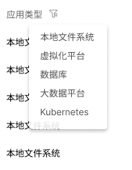

AnyBackup
报表中心优化&功能完善
数据保护产品针对任务和容量提供报表查看、导出、推送及数据可视化功能
02
用户需求分析
系统管理员
查看报表、观察基本情况、根据情况调整备份、恢复任务的容量及发起策略
操作员
查看报表、导出报表、统计结果、进行数据总结汇报等
巡检管理员
仅可查看报表、对异常情况进行汇报
原使用流程：
痛点：
长期查看的情况下手动导出报表繁琐
手动筛选报表
多次导出本地查看
任务：
查看报表（不仅限于最新的报表）、提交给相关同事
目标：
方便地查阅不同时间、具体类型的报表，对相关数据进行管理、分析、预测
新增功能后使用流程：
03
用户体验场景分析
通过分析用户在导出报表过程中引导其添加报表订阅的流程，使用用户旅程地图分析，完善用户场景的起点终点并剖析其中可能的设计机会点
阶段
行为
用户思考
痛点
设计机会点
查看报表
配置报表推送策略
外部查看报表
04
设计图及细节-1
增加流程引导
功能上线后，在前三次导出报表时在toast提示中进行引导
报表规则展示
推送规则详情展示
- 详情页增加编辑按钮，符合用户使用流程，无需退回至主页进行编辑
- 详情页可查看推送记录，推送记录中保留导出的报表文件，可点击进行再次下载。避免邮件发送失败或内容过多不好查找历史邮件
- 失败原因展示，清晰可排查
新建推送规则
- 必要配置先行判断，提供配置入口减少寻找用户成本
- 根据实际用户工作时间的场景，设置默认推送时间
- 提供添加其他邮箱选项，根据实际用户场景方便报表汇报给指定人员
05
任务报表分析
设计目标
简化流程，符合完整的用户使用流程
在庞大信息中总结出有用数据方便观测查看
业务目标
缩短任务结果查看时间
满足后续业务拓展
满足后续业务拓展
任务报表展示
任务次数及结果数字展示
根据时间筛选维度不同，展示不同时间段的趋势
点击结果后可直接筛选出对应报表

支持不同字段筛选后进行导出
失败原因可直接查看